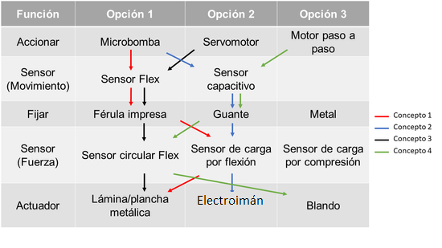
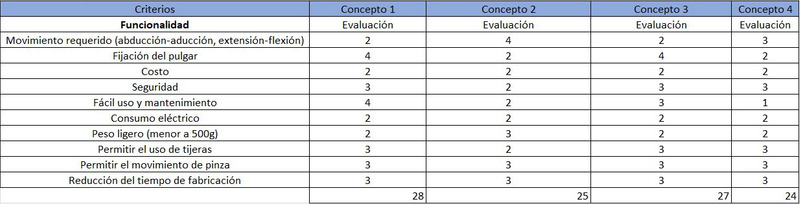

CONCEPTUALIZACIÓN DE LA SOLUCIÓN
Conforme íbamos recolectando información con respecto a como iba a funcionar el actuador movil, veíamos que se hacia muy complicado al momento de armar el prototipo; y por esa razon decidimos cambiar nuestra solución.
NUEVA SOLUCIÓN
Después de consultar con nuestros asesores sobre el problema de la solución elegida anteriormente, nos dieron otra visión con respecto a una nueva solución. La nueva solución propuesta consiste en una férula de impresión 3D, que mantendrá fijo el dedo pulgar para una rehabilitación rápida, con un soporte en la parte inferior de la palma para ayudar con el agarre de cosas; además en los dedos índice y medio habrán dos anillos (uno en cada dedo) que estarán unidos a unos músculos llamados "Músculos de McKibben", que al momento de contraerse prorporcionan la fuerza requerida para ayudar a cortar el pollo y támbien poder agarrar otras cosas con un mínimo esfuerzo. Este sistema funcionará mediante motores neumáticos y sensores flex, que controlarán cuanto se debe contraer y en que momento se debe contraer, respectivamente.
 